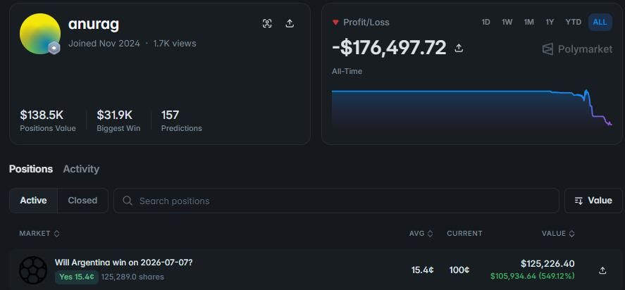
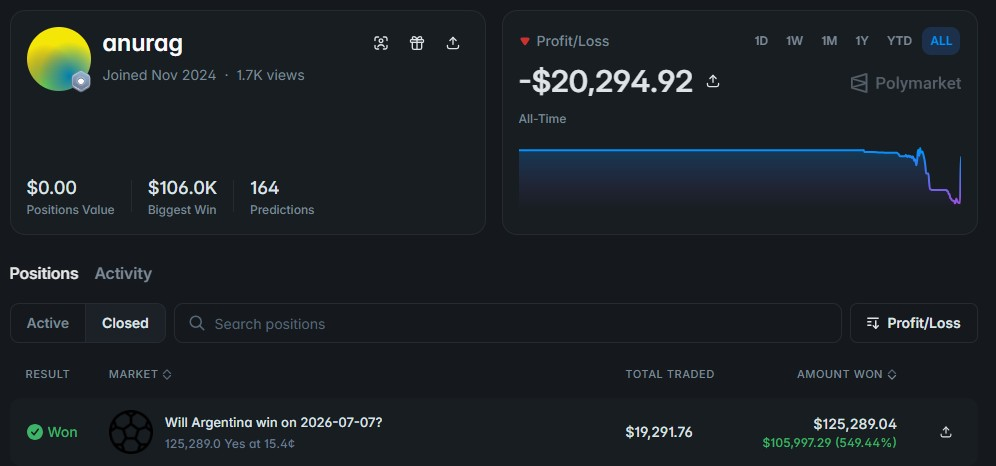

Sometimes One Trade Is All It Takes: The -$176K to +$125K Argentina Bet

Most of the recaps we cover here are about process — grinding out small edges over months, learning from losses, slowly building a track record. This one is different. It's the story of a single trade that, in about forty minutes of real time, turned a trader's fortunes almost completely around.
Starting from a deep hole
Before the trade in question, trader anurag's all-time profit and loss on Polymarket sat at roughly -$176,000. That's the kind of number that would push a lot of traders to walk away from the screen entirely, let alone put more money on the line. Instead, the setup for the recovery came from a World Cup match already in progress: Argentina, the defending champions, going up against Egypt in the Round of 16.
Down 2-0, and buying anyway
Egypt took the lead in the first half and doubled it in the second, and for a long stretch of the match Argentina looked genuinely rattled — Lionel Messi even missed a penalty that would have pulled them back into it. As the deficit held, the "Will Argentina win?" market on Polymarket priced Argentina's chances at only around 15 cents on the dollar, implying roughly a 15% probability of a win.
That's where anurag stepped in, buying a large position — about $19,000 worth of "Yes" shares on Argentina at that 15.4-cent price, with a share count north of 125,000. It's worth being clear about what this is: a concentrated, high-conviction bet made while the position was actively losing on the scoreboard, not a hedge or a small speculative flyer.
The comeback
Argentina didn't just claw back a goal. Cristian Romero scored in the 79th minute, Messi equalized minutes later, and Enzo Fernández completed the turnaround with a stoppage-time header, sealing a 3-2 win and sending Argentina through to the quarterfinals. It's since been described as one of the more dramatic comebacks in the tournament — a team that looked finished at 2-0 finding three goals in the final quarter-hour.
For anurag, that scoreline flipped a $19,000 position priced at 15 cents into a payout of roughly $125,000. The trader's profile shows the position moving from "Active" to "Won," with the market listed as fully resolved and the shares cashed out at $1.00 each.

What it did to the account
One trade doesn't erase a -$176,000 track record, but it puts a serious dent in it. After the payout, anurag's all-time PnL moved from around -$176,000 to roughly -$20,000 — recovering the large majority of the prior losses in a single position. It's a reminder of how asymmetric these markets can be: a correctly-timed bet at 15 cents doesn't just win, it wins at a payout ratio that can undo months of smaller losses in one shot.
Why 15% may have been mispriced
It's worth asking why the market only had Argentina at around 15% with time still on the clock. Part of the answer may be the tournament itself. African teams have had a habit in this World Cup of controlling matches for long stretches only to lose them in the final minutes. Senegal is the clearest example: they led Belgium 2-0 with the clock inside the final five minutes of regulation, only to concede twice in quick succession and eventually lose 3-2 in extra time on a late penalty. That pattern — strong African sides fading or getting caught late — may have shaped how traders were pricing similar situations, even against a team with Argentina's pedigree and a losing scoreline that, on paper, still left more than enough time for a response.
None of that guarantees anything about any individual match. But it's a useful illustration of the same idea that came up in our last recap: markets are driven by how people process uncertainty and react to recent, emotionally loaded information, and that can leave real gaps between the price and the probability.
The takeaway
This isn't a strategy post — there's no repeatable system in "buy a team down 2-0 and hope." It's a single, large, correctly-timed bet by a trader who was willing to take a real risk at a moment when the price and their own read of the situation had drifted far apart. The lesson isn't to chase this kind of trade; it's a reminder of how quickly a position can change an account's entire year, for better or worse, and why sizing and conviction matter as much as being right.
Disclaimer: This post recaps one individual's publicly visible trading activity on Polymarket. It is not financial advice, and results like these are not typical or guaranteed. Prediction markets carry real financial risk, including the risk of significant loss, and any decision to trade should be made on your own judgment and risk tolerance.